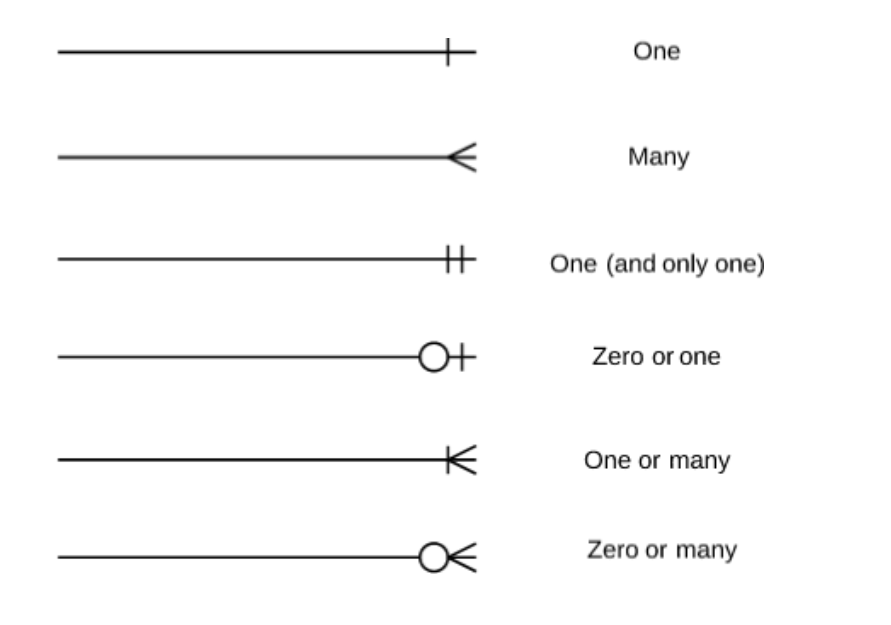

Data Modeling with ER Diagrams
Strong lives are motivated by dynamic purposes. —Kenneth Hildebrand
Overview
At this point we have most of the knowledge needed for creating APIs. We've practiced this numerous times and you should be getting familiar with the process. Now we're going to take a break and do a deeper dive into the ER (Entity Relationship) diagrams we first looked at last week.
Data Modeling
Data modeling is the process of creating a data model for the relationships in your database. The data model emphasizes what data is needed and how it should be organized in a visual manner. In a nutshell, we want to make sure all data objects are accurately represented well before we write any code!
One of the most common ways to do this is through the use of an ER diagram.
Entity Relationship Model
An Entity Relationship diagram uses UML Notation to visualize the relationships between our tables. UML stands for Unified Modeling Language and it is basically the go-to for designing object-oriented systems.
Remember our ER diagram from Week 3 . . .

Breaking Down the ER Diagram
In the diagram above, the rectangles with our table names on them (usersContact) are called entities. It's just an object that represents some sort of important data. The table, once saved in the database would accept and store multiple entities with these fields/properties on them.
Inside of the entity we see the attributes that correspond to our tables. Those are the field/column names and there may be symbols next to those fields. In fact, there is generally a symbol there that gives us some information about the field's responsibility. If it has a key icon, for example, that indicates that the field is the primary key. You can see a list of other field icons here.
Here's another diagram to look at. Notice the icons on these tables.
Cardinality
The last thing we need to talk about in order to understand our ER diagrams is cardinality. Cardinality refers to the type of relationships that we maintain between our entities. These types of relationships are how we can enforce data integrity throughout our database. For example, I can't assign a userId on a child table like usersContacts to an id that DOESN'T EXIST on the parent table users. But what cardinality is really talking about is the max or min number of relationships that can be maintained between two entities. For example, a "user" can have multiple "userContacts" but only one "usersAddress".
These relationships are usually described as "one-to-many", "one-to-one", or "many-to-many". The lines between the entities and the small notations at the end of them dictate these relationships.

Source: LucidCharts
Let's look at the data from the "employees" database above:
- Follow the line between the "employees" table to the "salaries" table. Starting at the "employees" table we see a double hashmark, this means that the relationship an entity in the "employees" table can have one and only one relationship with what ever table its connected to on this line.
- at the other end of that line connected to the "salaries" table we see a trident and a hash mark. This means that each entity in this table can have one or many relationships with entities in the table it's connected to.
- Summary: Each employee can have one and only one salary. But a salary amount could be given to one or, even, all of the employees.
- Going further, looking at the "salaries" table we can see that there are
from_dateandto_datefields. So it looks like that table holds a history of each salary an employee has had over the course of some time.
Are we starting to understand how to read these? You can see more cardinality symbols on the bottom of this page.
To further illustrate, take a look at the "departments" entity. Notice the double hash and trident lines? This shows that each "department" can have only one "title" but multiple "dept_emp" (department employees).
Determining our Data Model
Most of the information above assumes you already have a working database, or at least a couple tables. We've talked about how to read/interpret our diagrams and in our homework assignment today we will work on creating an ER diagram, but let's take a second to talk about modeling the data that these diagrams come from.
NOTE: data modeling is a broad subject. We will discuss only what's most important for us at this level.
Let's now assume that we are starting completely from scratch. We do not have a database set up at this point but we know we are going to use MySQL. We will want to take the following actions:
-
Understand the company's industry We need to know what we are building. Having an understanding of our business model will help us determine what our entities will be.
-
Identify our entities What tables do we think we will need to create? If I am in the ecommerce space I will probably want a table called
customers. -
Identify our attributes Now that we have our tables it's time to determine what fields should exist on those tables. Every "customer" should definitely have an
id, but what else? We might want to know the customers' first and last names and probably some contact information. -
Identify our relationships We have a "customers" table and because we know that customers will place orders, we've also gone ahead and created an "orders" table. Each table has its own set of attributes but how are they related? What's the cardinality? Well . . . if we assume that any customer can have multiple orders (that would make sense, right?) then we know that we have established a "one-to-many" relationship.
This is the thought process you will go through as you develop MySQL databases on your own. It may seem simple or it may seem complicated but data modeling is an important part of the development process and a good skill to have. Always begin by drawing it out on paper so you have a good visual understanding of your database's needs.
Practice It
- Re-create the above diagram on Draw.io
- Find the elements you need under the "Entity Relation" tab on the left toolbar
Hint: You can use an SQL statement to have the app automatically create the entities (tables) for you . . .